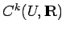

Inhalt Index DeskTop Bronstein

 Dynamische Systeme und Chaos Quantitative Beschreibung von Attraktoren Rekonstruktion der Dynamik aus Zeitreihen Rekonstruktionen mit prävalenten Eigenschaften
Dynamische Systeme und Chaos Quantitative Beschreibung von Attraktoren Rekonstruktion der Dynamik aus Zeitreihen Rekonstruktionen mit prävalenten Eigenschaften


Prävalenz oder metrische Generizität ist eine Ausweitung der für endlich-dimensionale Vektorräume sinnvollen Eigenschaft ,,fast überall im Sinne des LEBESGUE-Maßes`` (s. Lebesgue Maß) auf unendlich-dimensionale Räume. Sie unterscheidet sich damit von der auf Mengen der zweiten BAIREschen Kategorie zurückgehenden topologischen Form der Generizität (s. Generische Eigenschaften). Eine BOREL-Menge S des BANACH-Raumes B heißt prävalent (s. Lit. 17.23), wenn ein finites BOREL-Maß  mit kompaktem Träger K (s. Invariantes Maß) existiert, so daß für jedes ist.
mit kompaktem Träger K (s. Invariantes Maß) existiert, so daß für jedes ist.
| Beispiel A |
|
Jede BOREL-Menge eines endlich-dimensionalen Vektorraumes, deren Komplement das Maß Null hat, ist prävalent. |
| Beispiel B |
|
Die Vereinigung und der Durchschnitt einer endlichen Anzahl prävalenter Mengen ist prävalent. |
| Beispiel C |
|
Eine prävalente Teilmenge in offen und zusammenhängend, ist dicht im BANACH-Raum aller der skalarwertigen Funktionen aus , deren partielle Ableitungen der Ordnung stetig in |